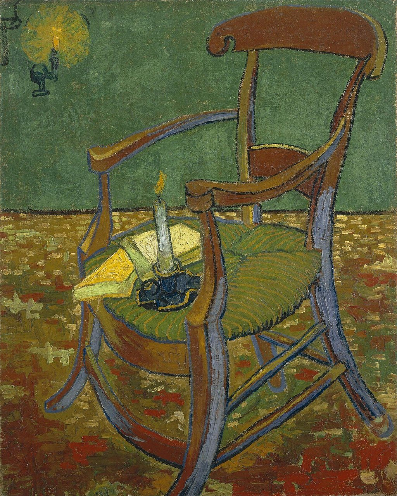

高更的椅子 Gauguin's Chair
梵高 · 1888年11月 · 阿姆斯特丹梵高博物馆
Vincent van Gogh · November 1888 · Van Gogh Museum, Amsterdam
图片：Wikimedia Commons，公有领域 / Image: Wikimedia Commons, public domain

画里没有人，这把椅子就是高更的“肖像”。 There is no one in the picture: the chair is Gauguin's “portrait”.
发现 · Discover
一张“肖像” A “portrait” without a sitter
画里没有人，但梵高博物馆说，这把椅子就是高更的一张“肖像”。
There is no one in the picture, but the Van Gogh Museum calls this chair a “portrait” of Gauguin.
蜡烛和小说 A candle and two novels
椅子上放着一支点燃的蜡烛和两本当时的小说。它们象征着不在场的高更的性格。
On the seat are a lit candle and two modern novels. They symbolise the character of the absent Gauguin.
讲究的扶手椅 A fine armchair
这是一把雕花、打磨发亮的深红棕色扶手椅，木头可能是胡桃木。和梵高自己那把简单的草编木椅很不一样。
This is a carved, polished armchair of dark reddish-brown wood, perhaps walnut. It is very different from Van Gogh's own plain rush-seated chair.
墙上的煤气灯 The gas lamp on the wall
看背景，墙上亮着一盏煤气灯。梵高大约一个月前才在黄房子里装上煤气灯，部分原因是想吸引高更来南方。
Look at the background: a gas lamp is burning on the wall. Van Gogh had installed gas lighting in the Yellow House about a month earlier, partly to tempt Gauguin to come south.
木头上的蓝影 Blue shadows on the wood
椅子打磨过的木头上有蓝色的阴影和反光，那是煤气灯照出来的。
The polished wood of the chair shows bluish shadows and reflected light, made by the gas lighting.
红与绿的夜晚 A night in red and green
梵高主要用红色和绿色，营造夜晚的气氛。
Van Gogh used mainly red and green to suggest the mood of night.
故事 · The story
ACT I 第一幕 · 1888年秋 Autumn 1888
高更来到阿尔勒，和梵高一起住在黄房子里。梵高画了两把空椅子：一把是自己的，白天，黄色和蓝色；一把是高更的，夜晚，红色和绿色。梵高博物馆说，这两幅画代表了两位画家不同的性格。
Gauguin came to Arles to live with Van Gogh in the Yellow House. Van Gogh painted two empty chairs: his own, by day, in yellow and blue; and Gauguin's, by night, in red and green. The Van Gogh Museum says the two paintings represent the different personalities of the two artists.
1888 · 阿姆斯特丹梵高博物馆 / 1888 · Van Gogh Museum, Amsterdam
ACT II 第二幕 · 空着的位置 The empty place
没过多久，两人就吵翻了。大约在1888年圣诞节，高更生气地离开了黄房子。一年多以后，梵高写信说：在他们分开前几天，他试着画下“他的空位”。
Soon afterwards the two men quarrelled. Around Christmas 1888, Gauguin left the Yellow House in anger. More than a year later, Van Gogh wrote that a few days before they parted, he had tried to paint “his empty place”.
ACT III 第三幕 · 一把在伦敦，一把在阿姆斯特丹 One in London, one in Amsterdam
两幅画本是一对，后来分开了。1923年，伦敦国家美术馆买下《梵高的椅子》。《高更的椅子》留在了梵高家族的收藏里，今天在阿姆斯特丹的梵高博物馆。
The two pictures were made as a pair, but they were separated. In 1923 the National Gallery in London bought Van Gogh's Chair. Gauguin's Chair stayed in the Van Gogh family collection and is now in the Van Gogh Museum, Amsterdam.
两把椅子，像白天和黑夜。 Two chairs, as different as night and day.
作品档案 · Artwork record
| 画家（生卒年） · Artist (dates) | 文森特·梵高（1853–1890） / Vincent van Gogh (1853–1890) |
|---|---|
| 画名 · Title | 高更的椅子 / Gauguin's Chair |
| 年份 · Date | 1888年11月，阿尔勒 / Arles, November 1888 |
| 材质 · Medium | 布面油画 / Oil on canvas |
| 尺寸 · Dimensions | 90.5 × 72.7 cm |
| 收藏地 · Collection | 阿姆斯特丹梵高博物馆（文森特·梵高基金会） / Van Gogh Museum, Amsterdam (Vincent van Gogh Foundation) |
关于画家 · About the artist
文森特·梵高（1853–1890），荷兰画家。他将近27岁才开始画画，短短十年留下了大量作品。1888年他来到法国南部的阿尔勒，在那里画出了许多最著名的画。
Vincent van Gogh (1853–1890) was a Dutch painter. He began painting at around 27 and left a huge body of work in just ten years. In 1888 he moved to Arles in the south of France, where he painted many of his best-known works.
更多梵高的画 · More by Vincent van Gogh